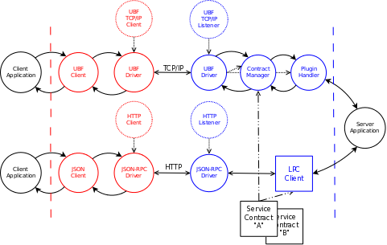

| Overview |  |
Protocol driver process for TBF (Thrift Binary Format) protocol sessions.
The process executingloop() in this module is represented in the
diagram below by the "UBF Driver" circle.

| decode/4 | |
| encode/2 | |
| init/1 | |
| start/1 |
decode(Contract, Cont, Binary, CallBack) -> any()
encode(Contract, Term) -> any()
init(Contract) -> any()
start(Contract) -> any()
Generated EDoc, $Id$